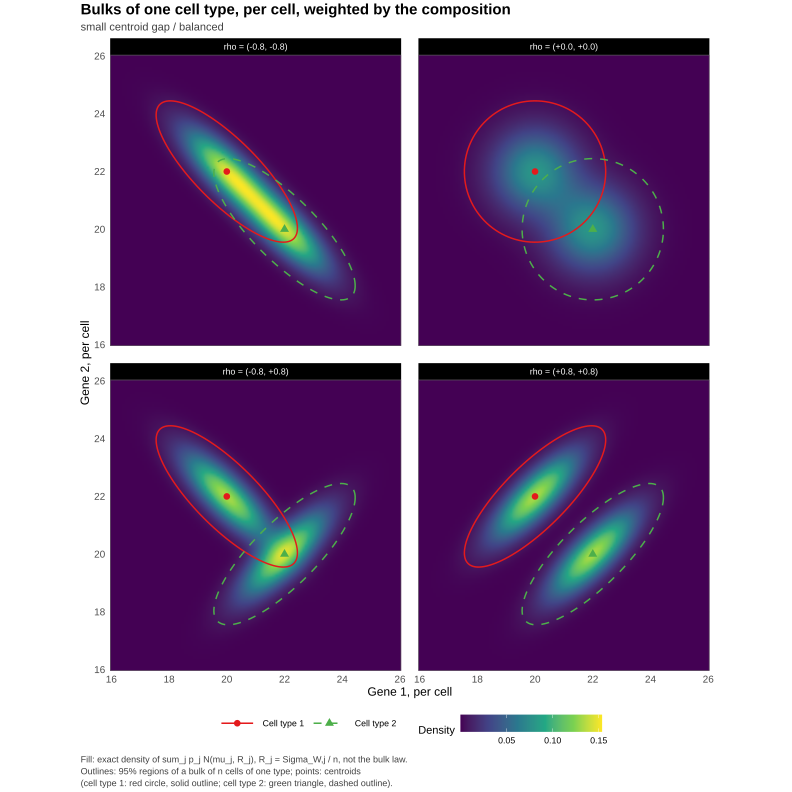
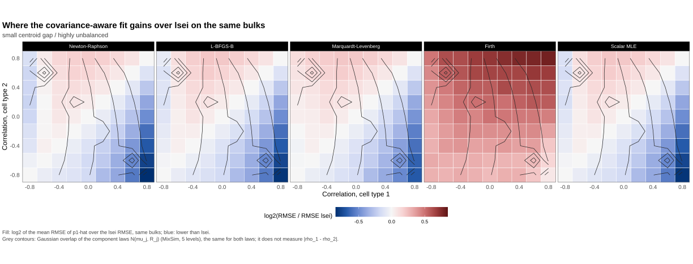
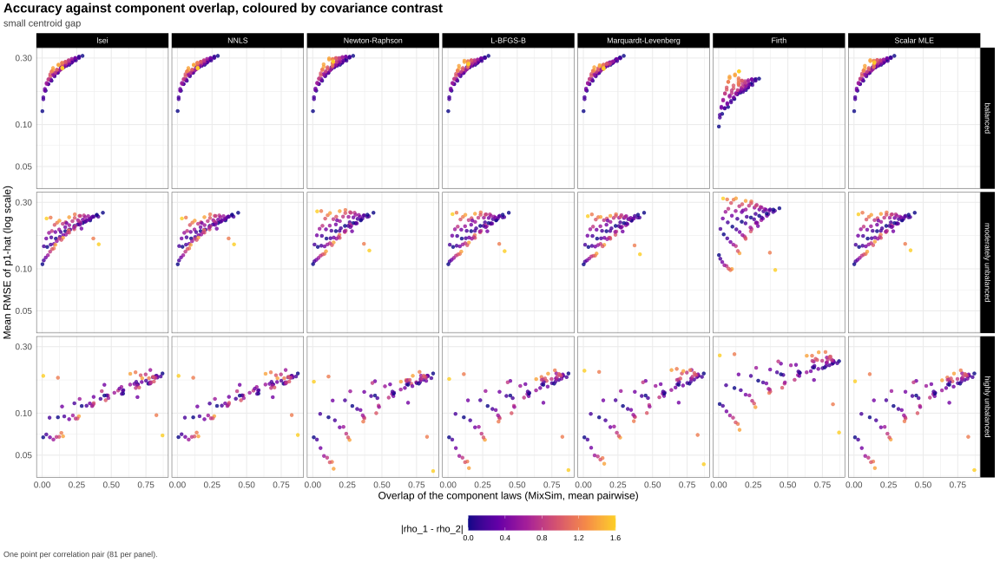
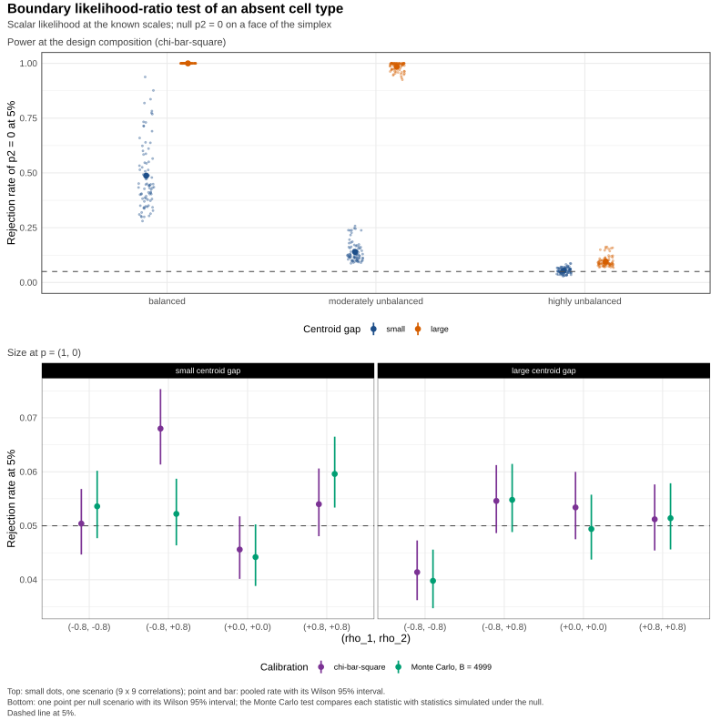
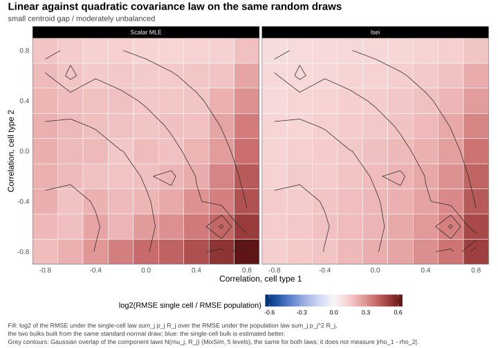
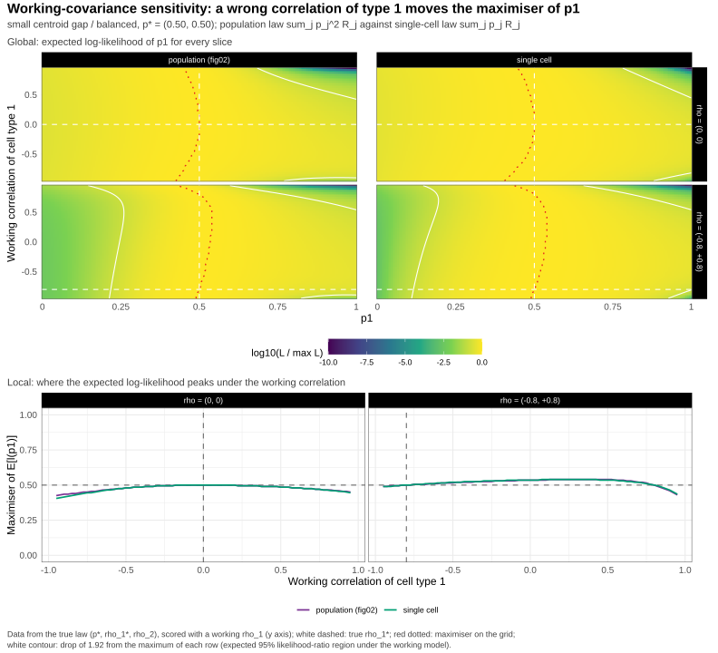

§2.4 Bivariate toy, single-cell model (G = 2, J = 2)
Full script: scripts/fig05_bivariate_single_cell.R
27 Nov 2026
Source:vignettes/R3-bivariate-single-cell.qmd
The bivariate toy fits the population convolution, whose bulk covariance is \sum_jp_j^2\boldsymbol R_j. The model that DeCovarT fits on real bulks is the single-cell model: a bulk is the sum of n cells, and its covariance is linear in the composition (single-cell model). This scenario rebuilds the toy on that model and changes nothing else: the two mean configurations, the three compositions, the 9\times9 grid of gene–gene correlations and the unit-variance correlation matrices \boldsymbol R_j are those of §2.2. The cell counts are fixed, the technical scales are known, and only the composition is estimated. A gap between the two scenarios is therefore a consequence of the covariance law, p_j^2 against p_j. Construction, benchmark and figures live in one script, scripts/fig05_bivariate_single_cell.R (seed 20261125).

Generative model
Bulk i sums exactly m_j=np_j^\star cells of type j, each drawn from \mathcal N_2(\tilde{\boldsymbol\mu}_{\cdot j},\boldsymbol\Sigma_{W,j}). The sum of independent Gaussian cells is Gaussian, and the bulk per cell \boldsymbol z_i=\boldsymbol y_i/n follows
\boldsymbol y_i\sim\mathcal N_2\bigl(n\tilde{\boldsymbol\mu}\boldsymbol p^\star,\; n\,\boldsymbol S_W(\boldsymbol p^\star)\bigr), \qquad \boldsymbol z_i\sim\mathcal N_2\bigl(\tilde{\boldsymbol\mu}\boldsymbol p^\star,\; p_1^\star\boldsymbol R_1+p_2^\star\boldsymbol R_2\bigr), \qquad \boldsymbol\Sigma_{W,j}=n\boldsymbol R_j , \tag{1}
with \boldsymbol S_W(\boldsymbol p)=\sum_jp_j\boldsymbol\Sigma_{W,j} (ledger V49a). The population toy of §2.2 draws \boldsymbol z_i\sim\mathcal N_2(\tilde{\boldsymbol\mu}\boldsymbol p^\star,\, p_1^{\star2}\boldsymbol R_1+p_2^{\star2}\boldsymbol R_2): the means are the same, and only the weights of the covariance mixture differ. The target is the design composition \boldsymbol p^\star, the same in every bulk of a scenario.
- The per-cell means are those of §2.2: (20,22) and (22,20) for the small centroid gap, (20,40) and (40,20) for the large one.
- \boldsymbol R_j is the exchangeable correlation matrix of \varrho_j, with unit variances (the homoscedastic level of §2.2).
- n=1000 gives whole cell counts for every composition: (500,500), (850,150) and (990,10).
Why \boldsymbol\Sigma_{W,j}=n\boldsymbol R_j. With this choice a bulk of one type has per-cell covariance \boldsymbol R_j, the covariance of the purified type in §2.2. The component laws \mathcal N_2(\tilde{\boldsymbol\mu}_{\cdot j},\boldsymbol R_j), and with them the Gaussian overlap computed by MixSim, are identical in both scenarios. The cell count then cancels from the law of \boldsymbol z_i, so n is a physical reading of the bulk, not a factor of the design. No single scale matches the two covariance laws everywhere. A per-cell covariance a\boldsymbol R_j gives \boldsymbol V_{\mathrm{sc}}(\tfrac12)=\tfrac a2(\boldsymbol R_1+\boldsymbol R_2), equal to the population value \tfrac14(\boldsymbol R_1+\boldsymbol R_2) for a=\tfrac12, while the derivatives in p_1 at \tfrac12, a(\boldsymbol R_1-\boldsymbol R_2) and \boldsymbol R_1-\boldsymbol R_2, agree for a=1. We match the components (a=1). A per-cell covariance that grows with the bulk size is a calibration device of this toy, not a property of real cells.
Why the scales are given
With G=2 genes, one bulk cannot identify c_i or \phi_i. The mean c\,\tilde{\boldsymbol\mu}\boldsymbol p has two free parameters, c and p_1, for two observations, so it fits any bulk inside the cone of the two signatures exactly. The residual is then zero, the closed-form \hat\phi=\boldsymbol r^\top\boldsymbol W\boldsymbol r/G is zero, and the profiled log-likelihood has no maximum. The REML degrees of freedom are \nu=G-J=0. Every scale-dependent fit therefore receives the true scales c=\phi=n (mean_scale, variance_scale), and only p_1 is estimated. deconvolute_single_cell() accepts G=J only on that path.
Information in the mean and in the covariance
Write \boldsymbol d=\tilde{\boldsymbol\mu}_{\cdot1}-\tilde{\boldsymbol\mu}_{\cdot2} and \boldsymbol V(p_1) for the per-cell covariance of either law. The Fisher information of p_1 splits into a mean (Mahalanobis) part and a covariance part (ledger V51a):
I(p_1)= \color{#1D4E89}{\boldsymbol d^\top\boldsymbol V^{-1}\boldsymbol d} +\color{#D55E00}{\tfrac12\operatorname{tr}\bigl[(\boldsymbol V^{-1}\boldsymbol V')^2\bigr]}, \qquad \boldsymbol V'_{\mathrm{sc}}=\boldsymbol R_1-\boldsymbol R_2, \qquad \boldsymbol V'_{\mathrm{pop}}=2p_1\boldsymbol R_1-2p_2\boldsymbol R_2 . \tag{2}
The single-cell derivative does not depend on p_1 and is zero when \boldsymbol R_1=\boldsymbol R_2. The population derivative is not: with \boldsymbol R_1=\boldsymbol R_2, the covariance part is 4(2p_1-1)^2/\{p_1^2+p_2^2\}^2, positive at every composition but the balanced one (ledger V51b). The population model learns p_1 from the overall bulk variance even when the two cell types have the same covariance; the single-cell model cannot. Some gains of §2.2 away from the balanced composition are therefore out of reach here, whatever the simulation settings. The config records both parts for both laws (fisher_mean_sc, fisher_cov_sc, fisher_mean_pop, fisher_cov_pop).
| Centroid gap | Composition | median f_{\mathrm{cov}}, single cell | median f_{\mathrm{cov}}, population | f_{\mathrm{cov}} at (-0.8,0.8), single cell | f_{\mathrm{cov}} at (-0.8,0.8), population |
|---|---|---|---|---|---|
| small | balanced | 0.046 | 0.089 | 0.24 | 0.39 |
| small | moderately unbalanced | 0.048 | 0.25 | 0.58 | 0.34 |
| small | highly unbalanced | 0.047 | 0.33 | 0.86 | 0.45 |
| large | balanced | 0.0005 | 0.0010 | 0.0032 | 0.0064 |
| large | moderately unbalanced | 0.0005 | 0.0033 | 0.014 | 0.0052 |
| large | highly unbalanced | 0.0005 | 0.0049 | 0.058 | 0.0081 |
With uncorrelated genes, \boldsymbol V_{\mathrm{sc}}=\boldsymbol I and the single-cell information is \boldsymbol d^\top\boldsymbol d=8 (small gap) or 800 (large gap) at every composition: a standard error of p_1 of 0.35 or 0.035. The population information at the same point is 16, 14.3 and 12.2 for the small gap (balanced, moderately and highly unbalanced), because p_1^2+p_2^2<1 shrinks the population covariance and \boldsymbol V'_{\mathrm{pop}}\neq\boldsymbol 0 away from \tfrac12. With the large gap, the mean part dominates both laws: the covariances carry at most 6% of the information.
Factorial design
| Factor | Levels |
|---|---|
| Centroid gap | small (20,22)/(22,20); large (20,40)/(40,20) |
| Composition \boldsymbol p^\star | balanced (1/2,1/2); moderately unbalanced (17/20,3/20); highly unbalanced (99/100,1/100) |
| Gene–gene corr. CT 1 (\varrho_1) | \{-0.8,-0.6,\ldots,0.8\}, 9 levels |
| Gene–gene corr. CT 2 (\varrho_2) | \{-0.8,-0.6,\ldots,0.8\}, 9 levels |
| Fixed | n=1000; m_j=np_j^\star; \boldsymbol\Sigma_{W,j}=n\boldsymbol R_j; c=\phi=n |
| Total scenarios | 2\times3\times9\times9=\mathbf{486} |
| Boundary null | \boldsymbol p^\star=(1,0); both gaps \times (\varrho_1,\varrho_2)\in\{(0,0),(-0.8,-0.8),(0.8,0.8),(-0.8,0.8)\}: 8 scenarios |
Scenario identifiers read SB{index}_{Ba|Mo|Hi}_{Sm|Lg}, for example SB41_Ba_Sm (\varrho_1=\varrho_2=0, balanced, small gap); the null scenarios read SB0{index}_Ab_{Sm|Lg}. Each scenario records four descriptors, kept apart in the analysis: the centroid gap, the MixSim overlap \bar\Omega of the component laws, the covariance contrast |\varrho_1-\varrho_2|, and the variance of each type along the mean contrast, \boldsymbol d^\top\boldsymbol R_j\boldsymbol d/\boldsymbol d^\top\boldsymbol d. For both gaps \boldsymbol d\propto(-1,1), so that variance is 1-\varrho_j: a negative correlation stretches a type along the direction that separates the two means and increases the overlap. The heteroscedastic level of §2.2 is not crossed.
Inference
Every method is scored on the same simulated bulks.
| Method | Function or code | Input | Intervals |
|---|---|---|---|
lsei |
deconvolute_ratios_deconrnaseq() on \boldsymbol y/c
|
true means, known c | none |
| NNLS | deconvolute_ratios_nnls() |
true means (free scale) | none |
| Newton–Raphson | deconvolute_single_cell(optimiser = "newton") |
true moments, known scales | Wald, ILR, LR inversion, oracle; bootstrap (12 scenarios) |
| L-BFGS-B | deconvolute_single_cell(optimiser = "lbfgsb") |
true moments, known scales | Wald, ILR |
| Marquardt–Levenberg | deconvolute_single_cell(optimiser = "marquardt") |
true moments, known scales | Wald, ILR |
| Firth | fit_firth_single_cell() |
true moments, known scales | Wald, ILR |
| Scalar MLE |
fit_sc_scalar() (script) |
true moments, known scales | none |
- The three DeCovarT solvers maximise the same log-likelihood at the same known scales. Newton–Raphson and Marquardt–Levenberg work in the ILR coordinate; Newton uses the PORT trust region of
stats::nlminb(), Marquardt–Levenberg adds Levenberg damping and stops on the relative distance to the maximum (Marquardt 1963; Commenges et al. 2006; Philipps et al. 2023). L-BFGS-B runs on the closure chart \boldsymbol p=\boldsymbol w/\mathbf1^\top\boldsymbol w, \boldsymbol w\ge0, and can return exact zeros (Byrd et al. 1995). Firth maximises the Jeffreys-penalised log-likelihood (Firth 1993). - The scalar MLE is the numerical reference. With J=2 the composition is one number p_1\in[0,1]; the script maximises the log-likelihood of \boldsymbol z_i with
stats::optimize()on (0,1), evaluates both endpoints, and keeps the highest of the three values. Its analytic score, observed Hessian and Fisher split are tested against finite differences. A package solver whose log-likelihood falls below the reference has stopped at a local maximum or short of the face. -
lseireads the bulk per cell \boldsymbol y/c and keeps \mathbf1^\top\boldsymbol p=1 (Gong and Szustakowski 2013); with two types it is the projection of \boldsymbol z_i on the segment between the signatures, clipped to [0,1]. NNLS fits a free scale and renormalises (Dessole et al. 2023). - RLM and CIBERSORT regress two observations on two signatures; MEAD and DECALS rely on asymptotics in the number of genes, and DECALS’ point estimate is
lsei. BayesPrism, SCDC and DeMixSC need count data or many genes. RNA-Sieve and ReDeconv estimate or read the reference from a cell panel; they are compared in §2.5, where the reference is part of the problem. None of these runs here, as in §2.2.
Interval constructions
The scales are known, so no nuisance parameter is profiled: the profile method of confint_profile_single_cell() is here the ordinary inversion of the likelihood-ratio test, \{p_1:2[\ell(\hat p_1)-\ell(p_1)]\le\chi^2_{1;0.95}\} (Wilks 1938). The figures label it “LR inversion, known scales”. The Wald and ILR intervals are kept as diagnostics: the Wald interval is symmetric and can leave [0,1], the ILR chart sends a face to infinity, and both are undefined when the estimate lies on a face. The bootstrap runs on the small gap, the three compositions and the four corner pairs (\varrho_1,\varrho_2)\in\{(0,0),(-0.8,-0.8),(0.8,0.8),(-0.8,0.8)\}: 12 scenarios, the same bulks as the main run. Coverage is reported with a Wilson Monte Carlo interval (Morris et al. 2019).
Boundary test of an absent cell type
The test of p_2=0 compares the scalar maximum with the vertex \boldsymbol p=(1,0) at the known scales. The null lies on a face, and the statistic is referred to \tfrac12\chi^2_0+\tfrac12\chi^2_1 (Self and Liang 1987). Power is the rejection rate on the bulks of the main run. Size is measured on the eight null scenarios, with N=5000 bulks each, under two calibrations: the chi-bar-square limit, and a Monte Carlo test that compares each statistic with B=4999 statistics simulated under the null, with p-value (1+\#\{T_b\ge T\})/(B+1) (northNoteCalculationEmpirical2002?). The null \boldsymbol p=(1,0) has no free parameter at known scales, so one simulated sample serves every bulk of a scenario and the Monte Carlo test is exact up to its Monte Carlo error. It simulates under the null; it does not resample the estimate, a bootstrap that is not consistent at the boundary (andrewsInconsistencyBootstrapWhen2000?). On the first 200 bulks of each null scenario, lrt_single_cell() at the known scales is run as a cross-check of the scalar statistic.
Paired comparison with the population law
Each bulk is \boldsymbol z_i=\tilde{\boldsymbol\mu}\boldsymbol p^\star+\boldsymbol L_{\mathrm{sc}}\boldsymbol\varepsilon_i, with \boldsymbol L_{\mathrm{sc}} the Cholesky factor of p_1^\star\boldsymbol R_1+p_2^\star\boldsymbol R_2 and \boldsymbol\varepsilon_i\sim\mathcal N_2(\boldsymbol 0,\boldsymbol I). The script recovers \boldsymbol\varepsilon_i and builds the population bulk \tilde{\boldsymbol\mu}\boldsymbol p^\star+\boldsymbol L_{\mathrm{pop}}\boldsymbol\varepsilon_i, with \boldsymbol L_{\mathrm{pop}} the factor of p_1^{\star2}\boldsymbol R_1+p_2^{\star2}\boldsymbol R_2. Both bulks are fitted by the scalar MLE of their own law and by lsei. The two experiments share their random numbers, so the difference in RMSE carries far less Monte Carlo noise than two independent runs would.
Run size
scripts/fig05_bivariate_single_cell.R; FIG05_POSTPROCESS_ONLY=1 redraws the figures.
| Constant | Meaning | Value |
|---|---|---|
N_REPLICATES |
Monte Carlo bulks per scenario, N | 2000 |
N_BOOT |
bootstrap replicates, B | 999 |
N_NULL |
bulks per null scenario of the boundary test | 5000 |
B_NULL |
null statistics of the Monte Carlo test | 4999 |
CORES |
workers for the N bulks of a scenario | half the cores (44 of 88) |
With N=2000, the Monte Carlo standard error of a 95% coverage is \sqrt{0.95\times0.05/2000}=0.005. The RMSE carries the delta-method standard error \operatorname{sd}(e^2)/(2\,\mathrm{RMSE}\sqrt N), printed next to it by scripts/fig05_summary_numbers.R.
Results
Each figure stem is one multi-page PDF, output/fig05/{density,performance}_visualisations/<stem>.pdf, with the RDS of the data that drew it next to it (<stem>.rds). The RDS holds the tables in long format and a pages table that names each page. One page is redrawn from that RDS alone, as an SVG under <stem>/<page_id>.svg:
| Stem | Description |
|---|---|
purified_density, bulk_density
|
Laws per cell: bulks of one type, \mathcal N(\tilde{\boldsymbol\mu}_{\cdot j},\boldsymbol R_j) (red: type 1, green: type 2), and the bulk, \mathcal N(\tilde{\boldsymbol\mu}\boldsymbol p,\sum_jp_j\boldsymbol R_j) |
loglik_surface_p, loglik_expected_surface_p
|
Log-likelihood of one bulk, and its expectation, on (p_1,p_2) at the true scales |
loglik_ilr_profile, loglik_expected_ilr_profile
|
The same along the ILR coordinate |
loglik_mean_shift_slice |
Mean collision: expected log-likelihood of p_1 while the mean of type 1 slides onto that of type 2, population and single-cell laws side by side; Fisher information split as in Eq. 2 |
loglik_correlation_slice |
Working-covariance sensitivity: data at the true (\boldsymbol p^\star,\varrho_1^\star,\varrho_2), model at a working \varrho_1; maximiser of the expected log-likelihood |
heatmap_rmse, heatmap_aitchison
|
Tiles on (\varrho_1,\varrho_2), one panel per method |
heatmap_rmse_ratio_lsei |
\log_2 of each likelihood method’s RMSE over the lsei RMSE on (\varrho_1,\varrho_2), with MixSim overlap contours |
rmse_overlap_scatter |
RMSE against overlap, coloured by \lvert\varrho_1-\varrho_2\rvert |
heatmap_rmse_ratio_population |
Paired \log_2 RMSE ratio, single-cell against population law, same random draws |
rmse_colour_aitchison_size_dots |
Colour = mean RMSE, size = mean Aitchison distance |
ci_width_forest |
Mean interval, coverage [Wilson interval] and width, per corner scenario |
p_hat_monte_carlo_raincloud, p_hat_monte_carlo_quantile_dots
|
Monte Carlo law of \hat p_1 |
wald_normality_qq, wald_mahalanobis_chi2_qq
|
Whitened ILR estimate, information at the true scales |
estimate_agreement_hellinger_ward |
Mean Hellinger distance between paired estimates, Ward clustering |
kkt_residual_raincloud, convergence_theoretical_vs_numerical_failures
|
Projected-score KKT residual; theoretical and numerical failures |
boundary_lrt |
Power of the boundary test of p_2=0; size on the null scenarios, chi-bar-square against the Monte Carlo test |
runtime, memory
|
\log_{10} seconds and MiB |
Results description
Every number below is printed by scripts/fig05_summary_numbers.R from output/fig05/fig05_benchmark.rds (N=2000 bulks per scenario). An RMSE is followed by its Monte Carlo standard error in brackets, a rate by its Wilson 95% interval.
Point estimates

All seven methods returned an estimate on every bulk of every scenario.
lsei to within 0.001 at the small gap.
| Centroid gap | Composition | lsei |
Newton–Raphson | L-BFGS-B | Marquardt–Levenberg | Firth | Scalar MLE |
|---|---|---|---|---|---|---|---|
| small | balanced | 0.304 [0.003] | 0.311 [0.003] | 0.310 [0.003] | 0.303 [0.003] | 0.244 [0.004] | 0.310 [0.003] |
| small | moderately unbalanced | 0.266 [0.005] | 0.265 [0.005] | 0.264 [0.005] | 0.260 [0.005] | 0.263 [0.004] | 0.264 [0.005] |
| small | highly unbalanced | 0.247 [0.006] | 0.243 [0.006] | 0.243 [0.006] | 0.243 [0.006] | 0.286 [0.004] | 0.243 [0.006] |
| large | balanced | 0.035 [0.001] | 0.035 [0.001] | 0.035 [0.001] | 0.035 [0.001] | 0.035 [0.001] | 0.035 [0.001] |
| large | moderately unbalanced | 0.035 [0.001] | 0.035 [0.001] | 0.035 [0.001] | 0.035 [0.001] | 0.034 [0.001] | 0.035 [0.001] |
| large | highly unbalanced | 0.026 [0.001] | 0.026 [0.001] | 0.026 [0.001] | 0.026 [0.001] | 0.040 [0.001] | 0.026 [0.001] |
- With the large gap, the mean carries more than 94% of the information (Table 1) and every method lands within 0.001 of the scalar MLE, except Firth in the highly unbalanced composition (0.040 against 0.026) and NNLS, whose RMSE exceeds that of
lseiby more than 5% in 41% of the highly unbalanced scenarios (up to 31%). - With the small gap, the RMSE of 0.24 to 0.31 is close to the standard error of 0.35 that uncorrelated genes give, and the estimate often lies on a face: the scalar MLE returns p_1\in\{0,1\} in 17%, 36% and 51% of the bulks (median over scenarios) for the balanced, moderately and highly unbalanced compositions. With p_1^\star=0.99, half of the estimates stop at p_1=1 and the others spread below it, hence a bias of -0.13 shared by
lseiand every likelihood fit. - Firth’s Jeffreys penalty pulls \hat p_1 towards \tfrac12. It lowers the RMSE when the truth is there (0.244 against 0.310, a gain over
lseiof more than 5% in 98% of the balanced small-gap scenarios) and raises it when the truth is near a face (0.286 against 0.243, bias -0.19; 0.040 against 0.026 at the large gap).
Where the covariance helps

lsei RMSE on the same bulks, small gap, highly unbalanced composition, on the (\varrho_1,\varrho_2) grid. Blue: the method beats lsei. Grey contours: MixSim overlap of the component laws.
lsei ignores the covariances, so the ratio of a likelihood fit’s RMSE to that of lsei isolates what the covariance term adds. For the scalar MLE, the median ratio over pairs with the same contrast |\varrho_1-\varrho_2| is 1 on the diagonal and moves as follows when the contrast reaches 1.6:
- small gap, balanced: up to 1.08, a loss;
- small gap, moderately unbalanced: between 0.98 and 1.02 throughout;
- small gap, highly unbalanced: down to 0.83. The gain exceeds 5% in 32% of the scenarios and the loss in 17%; the ratio ranges from 0.66 to 1.11. The gains sit where type 1, 99% of the cells, is positively correlated and type 2 negatively correlated (Fig. 3): type 1 is then narrow along the mean contrast (v_{\parallel,1}=1-\varrho_1=0.2) and type 2 wide (v_{\parallel,2}=1.8), so a few type-2 cells change the bulk variance in the direction that also separates the means. The losses, up to 11%, lie towards the mirror corner;
- large gap: between 0.97 and 1.01 on every page.
The DeCovarT solvers follow the scalar MLE: in the highly unbalanced small-gap page, Newton–Raphson, L-BFGS-B and Marquardt–Levenberg gain more than 5% in 31% to 33% of the scenarios and lose more than 5% in 15% to 17%. Within each overlap tercile, the median ratio of the most contrasted tercile is 1.01, 1.02 and 0.97 at the small gap: overlap and contrast act separately, and a high overlap alone does not make the covariance useful (Fig. 4).

MixSim overlap of the component laws, small gap, one point per correlation pair, coloured by |\varrho_1-\varrho_2|; rows: composition, columns: method.
Package solvers against the scalar reference
No package solver exceeded the scalar maximum by more than 10^{-6} log-likelihood units on any bulk, which confirms the reference. The median distance between a solver’s \hat p_1 and the scalar MLE is at most 1.1\times10^{-6}. Falling short of the maximum by more than 10^{-3} happens on at most 0.1% of the bulks for L-BFGS-B, on 2.2% to 2.8% (small gap) and up to 5.4% (large gap, highly unbalanced) for Newton–Raphson, and on 3.2% to 4.9% for Marquardt–Levenberg. The two ILR solvers start from the NNLS solution. The likely cause of the shortfall is the one found bulk by bulk in the boundary test below: when the start lies on a face, the ILR chart flattens the score and the iteration stops there. This was not checked on the main-run bulks. Median time per bulk: lsei and NNLS below 1 ms, scalar MLE 1 ms, L-BFGS-B 2 ms, Newton–Raphson 3 ms, Marquardt–Levenberg 4 ms, Firth 11 ms.
Intervals
| Centroid gap | Composition | Wald | ILR | LR inversion | Oracle |
|---|---|---|---|---|---|
| small | balanced | 0.937 (1.26) | 1.000 (0.89) | 0.959 (0.84) | 0.956 (1.49) |
| small | moderately unbalanced | 0.899 (1.21) | 0.977 (0.91) | 0.974 (0.74) | 0.998 (1.33) |
| small | highly unbalanced | 0.887 (1.17) | 0.597 (0.93) | 0.974 (0.66) | 0.997 (0.37) |
| large | balanced | 0.949 (0.14) | 0.952 (0.14) | 0.950 (0.14) | 0.950 (0.14) |
| large | moderately unbalanced | 0.950 (0.13) | 0.956 (0.14) | 0.950 (0.13) | 0.951 (0.14) |
| large | highly unbalanced | 0.887 (0.12) | 0.760 (0.43) | 0.975 (0.08) | 1.000 (0.11) |
- The LR inversion covers 0.950 to 0.975 on every page, is defined on every bulk, and is the narrowest construction except the oracle at the small gap and highly unbalanced composition. Its over-coverage near a face probably reflects the truncation of the interval at p_1=1.
- The Wald interval is undefined whenever the estimate lies on a face (8%, 17% and 44% of the bulks by composition) and under-covers (0.887 to 0.899) in the unbalanced compositions. The ILR interval falls to 0.60 and 0.76 in the highly unbalanced composition, where the chart sends the face to infinity. L-BFGS-B, Marquardt–Levenberg and Firth give the same picture; Firth’s ILR interval covers 0.08 and 0.20 there, centred on its biased estimate.
- In the 12 bootstrap scenarios, the LR inversion covers 0.956 to 0.982. The percentile bootstrap covers 0.92 to 1.00 except at the opposite-sign corner (-0.8,0.8): 0.79 [0.77, 0.81] balanced and 0.89 [0.88, 0.90] moderately unbalanced. The Wald interval covers 0.76 and 0.60 at the same two scenarios.
Boundary test of an absent cell type

- With the large gap, the test detects type 2 in every balanced bulk and in 98.5% of the moderately unbalanced ones; at p_2=0.01 the rate is 0.096 [0.095, 0.098]. With the small gap the rates are 0.49, 0.14 and 0.054, the last one indistinguishable from the size.
- Under the null, pooled over the eight scenarios, the chi-bar-square limit rejects 0.052 [0.050, 0.055] and the Monte Carlo test 0.051 [0.049, 0.053]. The two calibrations part at the small gap with opposite-sign correlations: 0.068 [0.061, 0.075] for the chi-bar-square limit and 0.052 [0.046, 0.059] for the Monte Carlo test. There T=0 in 57% of the bulks instead of the limiting 50%, and P(T>2.71\mid T>0)=0.068/0.427=0.16 instead of 0.10: the limit’s mixture weight and its \chi^2_1 tail are both off, and the Monte Carlo test absorbs both.
- On the first 200 bulks of each null scenario,
lrt_single_cell()at the known scales matches the scalar statistic to 10^{-4} in 94.75% of the 1,600 bulks; in the other 84 it returns 0 while the scalar statistic is positive (median 0.13, maximum 4.27). In all 84 the NNLS start lies on the vertex \boldsymbol p=(1,0), Newton–Raphson in the ILR coordinate stops after one iteration because the ILR chart flattens the score there, and a restart from (\tfrac12,\tfrac12) recovers the scalar MLE. The package test is therefore conservative on these bulks; the size and power above use the scalar statistic.
Paired comparison with the population law

lsei.
With \boldsymbol R_1=\boldsymbol R_2=\boldsymbol R, the two laws differ only by the factor p_1^2+p_2^2 in front of \boldsymbol R, so an estimator whose error scales with the noise has a \log_2 RMSE ratio of -\tfrac12\log_2(p_1^2+p_2^2): 0.50, 0.21 and 0.014 for the balanced, moderately and highly unbalanced compositions. That noise-scale ratio is the baseline of Table 9.
| Centroid gap | Composition | RMSE single cell | RMSE population | median \log_2 ratio, scalar MLE | single cell better | median \log_2 ratio, lsei
|
|---|---|---|---|---|---|---|
| small | balanced | 0.310 | 0.204 | 0.59 | 0% | 0.35 |
| small | moderately unbalanced | 0.264 | 0.228 | 0.20 | 0% | 0.17 |
| small | highly unbalanced | 0.243 | 0.251 | -0.05 | 95% | 0.014 |
| large | balanced | 0.035 | 0.025 | 0.50 | 0% | 0.50 |
| large | moderately unbalanced | 0.035 | 0.030 | 0.22 | 0% | 0.21 |
| large | highly unbalanced | 0.026 | 0.026 | -0.017 | 89% | 0.014 |
- With the large gap,
lseireproduces the noise-scale ratio to within 0.001 (0.500, 0.212, 0.0135), and the scalar MLE stays within 0.006 of it except in the highly unbalanced composition. The law changes the noise level and little else. - With the small gap and the balanced or moderately unbalanced composition, the population bulk is estimated better in every scenario. For the moderately unbalanced composition the scalar-MLE ratio rises from 0.18 on the diagonal \varrho_1=\varrho_2 to 0.40 at the largest contrast (Fig. 6): the quadratic law extracts more from contrasted correlations than the linear law.
- In the highly unbalanced composition the single-cell bulk is estimated better in 95% (small gap) and 89% (large gap) of the scenarios, by up to \log_2 ratio -0.23 at the largest contrast. Here the linear law gives the covariance the larger share of the information (0.86 against 0.45 at (-0.8,0.8), Table 1).
- On the diagonal \boldsymbol R_1=\boldsymbol R_2, the scalar-MLE ratio of the small gap is 0.18 (moderately unbalanced) and -0.05 (highly unbalanced), below the noise-scale baseline of 0.21 and 0.014, although only the population law has a covariance part there (Eq. 2). With a third to a half of the single-cell estimates on a face, the clipping at [0,1] caps the error of both laws, and the local information does not predict the finite-sample RMSE.
Likelihood geometry
![Top: four heat maps of the expected relative log-likelihood over p1 and the mean shift t, maximal along p1 = 0.85 in every panel. With uncorrelated genes the population panel keeps a 95% region bounded away from p1 = 0 at every t, while the single-cell panel flattens. Bottom: Fisher information against t on a log scale; the blue mean part falls to zero as t approaches 1; the orange covariance part is flat, about 3.5 for the population law and zero for the single-cell law with uncorrelated genes, and about 3 for the population law and 6 to 7 for the single-cell law with correlations (-0.8, 0.8).](figures/fig05/density_visualisations__loglik_mean_shift_slice__small_centroid_gap_moderately_unbalanced.svg)
When the two means collide (t\to1), only the covariance part of Eq. 2 remains (Fig. 7). With uncorrelated genes, it is 4(2p_1-1)^2/(p_1^2+p_2^2)^2=3.5 at \boldsymbol p^\star=(0.85,0.15) for the population law and zero for the single-cell law, so only the population model still locates p_1 when the means coincide.

A wrong working correlation of type 1 moves the maximiser of the expected log-likelihood. At the balanced composition the two laws react alike: the maximiser stays within [0.41,0.54] over working correlations from -0.95 to 0.95 (Fig. 8). Away from the balanced composition the population law reacts more, because it draws more of its information from the covariance. With uncorrelated genes at the small gap, the maximiser ranges over [0.53,1] (population) against [0.59,0.85] (single cell) for p_1^\star=0.85, and over [0.035,1] against [0.64,0.99] for p_1^\star=0.99. With the large gap it never moves by more than 0.07 under either law.
Discussion
The benchmark differs from §2.2 only in the covariance law, so the gaps between the two scenarios are properties of the laws.
When the cell types share their covariance, the single-cell covariance carries no information about p_1: \boldsymbol V'_{\mathrm{sc}}=\boldsymbol R_1-\boldsymbol R_2 is zero at every composition, while the population derivative 2p_1\boldsymbol R_1-2p_2\boldsymbol R_2 vanishes only at p_1=\tfrac12. The population model can read p_1 from the overall bulk variance; the single-cell model cannot. Fig. 7 shows the consequence once the means coincide. In the factorial, where the means differ, this extra information does not lower the population RMSE on the diagonal of the small gap, where a third to a half of the estimates sit on a face and the clipping dominates.
The quadratic law separates contrasted covariances better, except next to a face. At the balanced and moderately unbalanced compositions, the paired ratio grows with |\varrho_1-\varrho_2|. At p_1^\star=0.99 the linear law gives the covariance the larger share of the information, and the single-cell bulk is estimated better. No ranking of methods or laws was fixed before the run; this one is reported, not used as an acceptance criterion.
For one bulk of two genes, the covariance pays off in one corner of the design. At the small gap and p_1^\star=0.99, the likelihood fits beat lsei by up to 34% when the dominant type is tight along the mean contrast and the rare type wide; elsewhere they match lsei to within a few per cent. With the large gap the mean decides.
At known scales the LR inversion is the interval to read (coverage 0.950 to 0.975), and the scalar boundary test holds its size under either calibration once pooled. The Monte Carlo test corrects the one scenario where the chi-bar-square limit is liberal. lrt_single_cell() misses the interior maximum when its NNLS start lies on the null vertex; in the 84 discrepant bulks, a start at (\tfrac12,\tfrac12) recovered the scalar MLE.
Caveats
- A sum of Gaussian cells is Gaussian at any n. A count layer would be needed to test the central-limit step itself.
- \boldsymbol\Sigma_{W,j}=n\boldsymbol R_j makes the per-cell covariance grow with the bulk size. It holds the component laws of §2.2 fixed; it is not a model of cells.
- Every fit reads the true moments and the true scales. The cost of an unknown cell count, of a platform scale and of an estimated reference is studied in §2.5.
- Each estimate uses one bulk of two genes. The Wald and likelihood-ratio intervals are then one-observation approximations, whose calibration is what the coverage measures.
See also
- Population toy: §2.2
- Single-cell model and its fit: generative model and optimisation
- Single-cell intervals and tests: inference
- Two lineages, many genes: §2.5